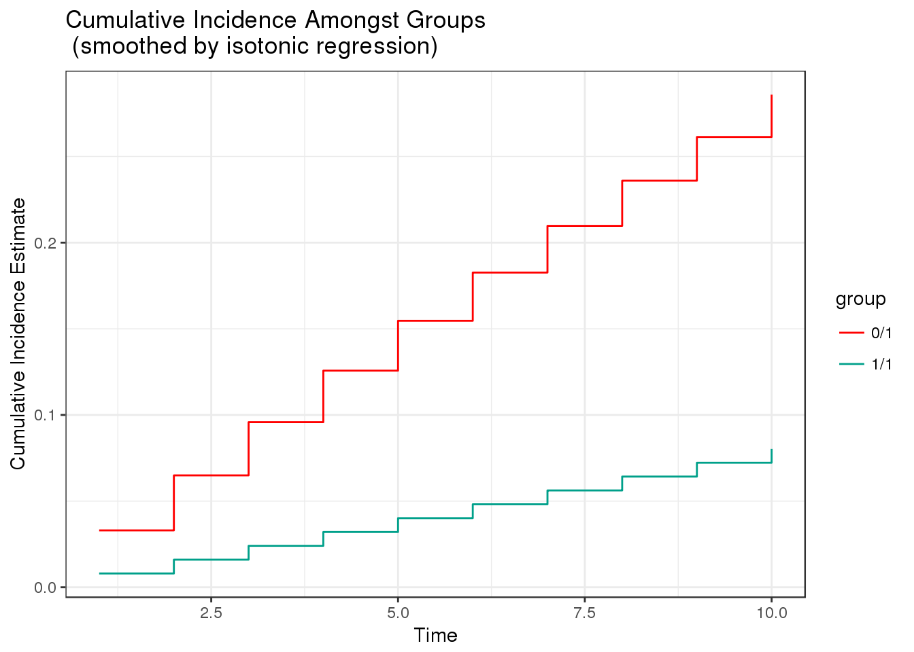

Targeted Minimum Loss-Based Estimation (TMLE) for Survival Analysis with Competing Risks
Authors: David Benkeser and Nima Hejazi
Description
survtmle is an R package designed to use targeted minimum loss-based estimation (TMLE) to compute covariate-adjusted marginal cumulative incidence estimates in right-censored survival settings with and without competing risks. The estimates can leverage ensemble machine learning via the SuperLearner package.
Installation
For standard use, we recommend installing the package from CRAN via
install.packages("survtmle")You can install a stable release of survtmle from GitHub via devtools with:
devtools::install_github("benkeser/survtmle")Example
This minimal example shows how to use survtmle to obtain cumulative incidence estimates with a very simple, simulated data set.
# simulate data
set.seed(341796)
n <- 100
t_0 <- 10
W <- data.frame(W1 = runif(n), W2 = rbinom(n, 1, 0.5))
A <- rbinom(n, 1, 0.5)
T <- rgeom(n,plogis(-4 + W$W1 * W$W2 - A)) + 1
C <- rgeom(n, plogis(-6 + W$W1)) + 1
ftime <- pmin(T, C)
ftype <- as.numeric(ftime == T)
# load the package
library(survtmle)
#> survtmle: Targeted Learning for Survival Analysis
#> Version: 1.0.2.1
# apply survtmle for estimation
fit <- survtmle(ftime = ftime, ftype = ftype,
trt = A, adjustVars = W,
glm.trt = "1",
glm.ftime = "I(W1*W2) + trt + t",
glm.ctime = "W1 + t", method = "hazard",
t0 = t_0)
# extract cumulative incidence at each timepoint
tpfit <- timepoints(fit, times = seq_len(t_0))
# examine output object produced by the timepoints function
tpfit
#> $est
#> t1 t2 t3 t4 t5 t6
#> 0 1 0.032997470 0.06492788 0.09582530 0.12572293 0.15465313 0.18264737
#> 1 1 0.008014555 0.01603567 0.02406256 0.03209448 0.04013064 0.04817027
#> t7 t8 t9 t10
#> 0 1 0.20973629 0.23594966 0.26131640 0.28586459
#> 1 1 0.05621257 0.06425675 0.07230203 0.08034761
#>
#> $var
#> t1 t2 t3 t4 t5
#> 0 1 4.565496e-04 0.0005099637 0.0004951975 0.0004852183 0.0005862762
#> 1 1 2.111604e-06 0.0003345475 0.0003208485 0.0003079889 0.0006317931
#> t6 t7 t8 t9 t10
#> 0 1 0.0012883360 0.0013743743 0.0012847990 0.0020298371 0.003137739
#> 1 1 0.0006229943 0.0009761833 0.0009544762 0.0009534062 0.000956650
# examine plot of cumulative incidences
plot(tpfit)
Contributions
It is our hope that survtmle will grow to be widely used in health and medical studies where the substantive scientific questions concern parameters for which estimation and inference can be obtain nonparametrically, in settings involving right-censoring. To that end, contributions are very welcome, though we ask that interested contributors consult our contribution guidelines prior to submitting a pull request.
Citation
After using the survtmle R package, please cite both of the following:
@misc{benkeser2017survtmle,
author = {Benkeser, David C and Hejazi, Nima S},
title = {{survtmle}: Targeted Minimum Loss-Based Estimation for
Survival Analysis in {R}},
year = {2017},
howpublished = {\url{https://github.com/benkeser/survtmle}},
url = {http://dx.doi.org/10.5281/zenodo.835868},
doi = {10.5281/zenodo.835868}
}
@article{benkeser2017improved,
author = {Benkeser, David C and Carone, Marco and Gilbert, Peter B},
title = {Improved estimation of the cumulative incidence of rare
outcomes},
journal = {Statistics in Medicine},
publisher = {Wiley-Blackwell},
year = {2017},
doi = {10.1002/sim.7337}
}License
© 2016-2017 David C. Benkeser
The contents of this repository are distributed under the MIT license. See below for details:
The MIT License (MIT)
Copyright (c) 2016-2017 David C. Benkeser
Permission is hereby granted, free of charge, to any person obtaining a copy
of this software and associated documentation files (the "Software"), to deal
in the Software without restriction, including without limitation the rights
to use, copy, modify, merge, publish, distribute, sublicense, and/or sell
copies of the Software, and to permit persons to whom the Software is
furnished to do so, subject to the following conditions:
The above copyright notice and this permission notice shall be included in all
copies or substantial portions of the Software.
THE SOFTWARE IS PROVIDED "AS IS", WITHOUT WARRANTY OF ANY KIND, EXPRESS OR
IMPLIED, INCLUDING BUT NOT LIMITED TO THE WARRANTIES OF MERCHANTABILITY,
FITNESS FOR A PARTICULAR PURPOSE AND NONINFRINGEMENT. IN NO EVENT SHALL THE
AUTHORS OR COPYRIGHT HOLDERS BE LIABLE FOR ANY CLAIM, DAMAGES OR OTHER
LIABILITY, WHETHER IN AN ACTION OF CONTRACT, TORT OR OTHERWISE, ARISING FROM,
OUT OF OR IN CONNECTION WITH THE SOFTWARE OR THE USE OR OTHER DEALINGS IN THE
SOFTWARE.